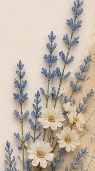
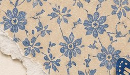
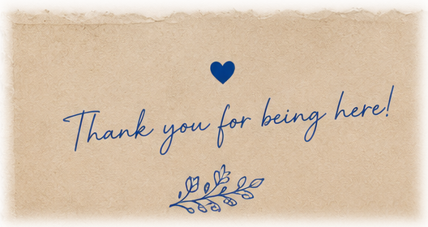

— THE STUDIO —
Welcome to Sentimentalica, a digital paper studio specializing in curated mega-bundles for paper crafting and junk journaling.
Our approach is built on variety and completeness. We know how satisfying it is to have choices, which is why every single listing in our shop is a massive collection containing between 100 and 200+ printable pages.
We pack each themed kit with everything you need to build a complete journal from scratch: from fluid watercolor backgrounds and highly detailed portraits to functional page layouts and ephemera. With hundreds of cohesive elements available in a single purchase, you will always find the exact piece to fit your creative vision.
Browse the shop on Etsy →